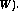

We now study path problems for graphs with edge weights, which we call costs. For convenience we also call a (slightly modied) weighted adjacency matrix of a graph (or digraph) simply a cost matrix. Although the shortest path problem seems much harder with edge-weights than without, Dijkstra has invented an algorithm that computes the shortest distances from a vertex s to all other vertices in time . This is only slightly slower than the time which is needed for our method maxDistances.
We assume below that the `cost' between two vertices without an edge (arc) is
some suciently large number (representing 1 in the cost matrix).
algorithm Dijkstra
(digraph , cost matrix  , vertex )
, vertex )
1 W = {s} and d[s] = 0
2 for each &#;`
{s} do
d[ ] =
3 while do
find d[x] = min(d[y] | y W)
W = W
4 for all &#;`
W do
d[y] = min(d[y], d[x] + )
endwhile
5 return shortest distance vector d[ ]
end
The idea behind Dijkstra's algorithm is to start with a set of vertices W (initially
) reachable by some total cost C and all other vertices will require
higher cost than C. We gradually increase the value of C until all vertices
are reachable from the start vertex . The increment to C is calculated
by taking the smallest cost edge between vertices of  and vertices of
V &#;`
and vertices of
V &#;`
W. Line 4 in the algorithm updates these distances after a new
vertex is added to W. The while loop on line 3 is repeated times.
Thus, one can check that the total time of the algorithm is .
A priority queue can be used to efficiently pick the next closest vertex x.
Example 29. An application of Dijkstra's algorithm on the second digraph
of Example 26 is given below for every starting vertex.
This example illustrates that the distance vector is updated at most times (only before a new vertex is selected and added to  Thus we could have omitted the lines with above.